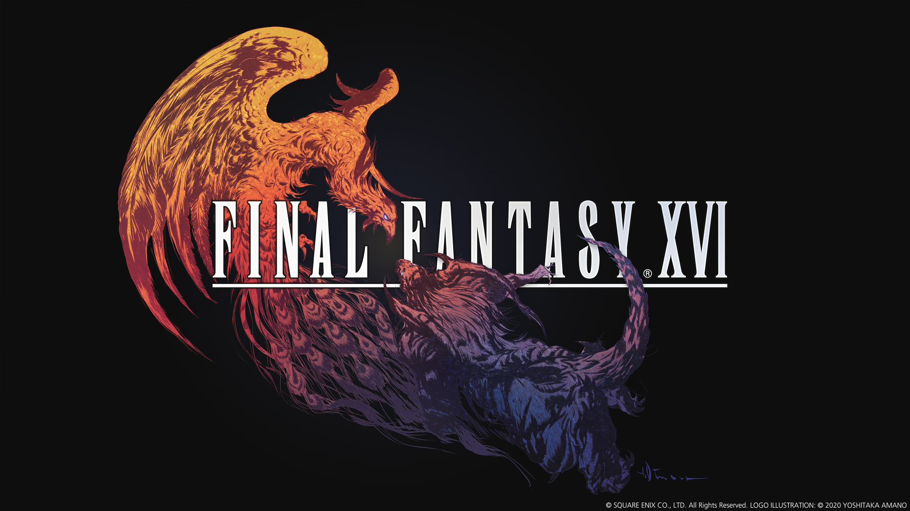
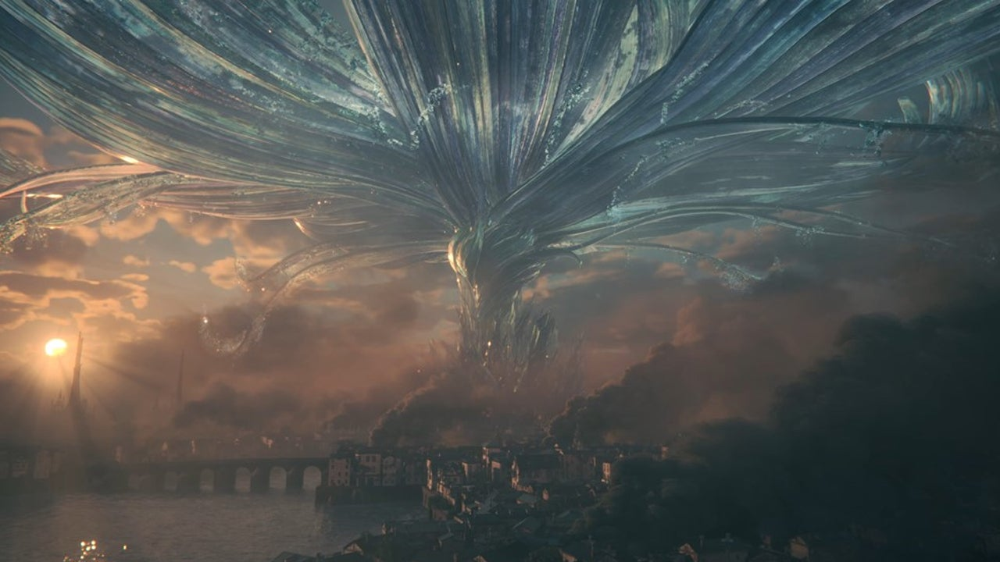

Final Fantasy XVI
The Journey

Final Fantasy XVI is set in the fictional world of Valisthea. Scattered throughout the two continents of Ash and Storm are colossal magical crystals, known as the Mothercrystals, which provide aether energy to the various populations and drive civilization with shards mined for commercial use. There are also humans that can use magic without crystals known as Bearers who are subject to prejudice and slavery, their overuse causing them to gradually petrify. A powerful force in Valisthea are the Eikons, magical creatures of incredible power that are utilized by hosts called Dominants. There are eight Eikons, one for each of the elements - Phoenix (fire), Shiva (ice), Ramuh (thunder), Leviathan (water), Titan (earth), Garuda (wind), Odin (darkness), and Bahamut (light); a seemingly impossible second Eikon of fire, Ifrit, drives the main plot by disrupting this balance.
The core nations of Valisthea are the Grand Duchy of Rosaria, the Holy Empire of Sanbreque, and the Dhalmekian Republic on the Storm continent, the Kingdom of Waloed which dominates the Ash continent, and the neutral Crystalline Dominion sitting between Ash and Storm. An outlier is the Iron Kingdom, an isolated nation off the coast of Storm overseen by the Crystalline Orthodox. In the backstory an ancient people, humanity's ancestors the Fallen, once dominated Valisthea before a cataclysm destroyed their civilization, leaving ruins across the land. By the game's events, Valisthea is suffering from a depletion of aether dubbed the Blight which withers all life, driving the nations into conflict with each other. Because of their ability to manifest Eikons, Dominants play a key role in the nations' politics and military. Depending on where they are born, Dominants are hailed as political leaders, tolerated due to their power, or suffer abuse and are either killed or used as weapons of war.
Clive Rosfield

The game's protagonist is Clive Rosfield, firstborn son of Rosaria's ruling family who is passed over as successor when his younger brother Joshua becomes the Dominant of Phoenix; Clive can acquire and wield the power of multiple Eikons. A future companion of Clive's is his childhood friend Jill Warrick, the eventual Dominant of Shiva who spends much of her life as a political hostage. During his travels Clive is joined by his hound, Torgal; and Cidolfus Telamon, Dominant of Ramuh who provides shelter for Bearers and Dominants, and is an incarnation of a recurring Final Fantasy character. Other prominent characters include Barnabas Tharmr, king of Waloed and Dominant of Odin; Benedikta Harman, a Waloed spy and Dominant of Garuda; Hugo Kupka, key political figure in the Dhalmekian Republic and Dominant of Titan; and Dion Lesage, crown prince of Sanbreque and Dominant of Bahamut.
The game was praised by critics for its story, graphics, music, and gameplay. Criticism focused on lack of role-playing elements, technical issues, and side quest design. The game sold over three million units during its first week after launch, but failed to meet Square Enix's expectations. After release, the game was supported by a variety of downloadable content, including story-focused campaigns and smaller patches to include new features and in-game items.